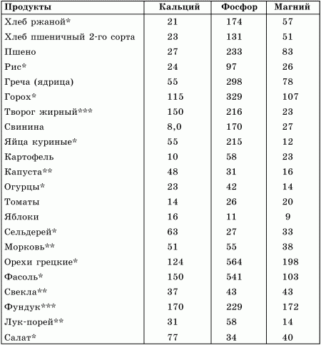
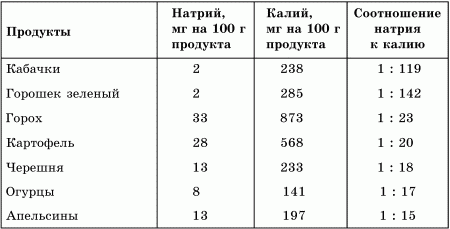
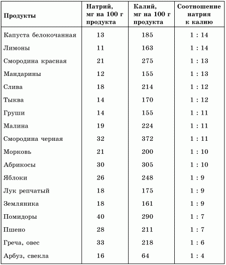

Макроэлементы
 Кальций
Кальций
Среди элементов, которые входят в состав нашего тела, кальций занимает пятое место после углерода, кислорода, водорода и азота.
Кальций входит в состав скелета, зубов, ногтей, волос. В организме содержится в норме около 1200 г кальция, 99 % этого количества сосредоточено в костях.
Постоянно идут два процесса: рассасывание костного вещества с выходом освобожденного кальция и фосфора в кровоток и отложение фосфорно-кальциевых солей в костной ткани. У растущих детей скелет полностью обновляется за 1–2 года, у взрослых – за 10–12 лет.
У взрослого человека за сутки из костной ткани выводится до 700 мг кальция и столько же откладывается вновь. Таким образом, костная ткань, помимо опорной функции, играет роль депо кальция и фосфора, откуда организм извлекает их при недостатке поступления с пищей. Например, при падении атмосферного давления организму для сохранения равновесия требуется больше, чем обычно, кальция. Если его запасов в крови нет, то он усиленно извлекается из костей. Когда процесс выходит за пределы нормы, развивается патология, чаще у пожилых, и они говорят: «Ох, как кости болят! Это к плохой погоде».
Когда в организм длительное время поступает мало кальция, то он может замещаться стронцием, так как молекулярные структуры их похожи. И тем не менее молекулярная решетка стронция больше, чем у кальция. Отсюда появляются изменения в костях и суставах – «наросты», «искривления», «уплотнения», «шишки» и т. п. Особенно активно эти процессы происходят после 35–40 лет, когда организм начинает «перекачивать» кальций из костей в кровь, к 65–70 годам человек может потерять до 30 % своего костного кальция. И как результат – остеопороз (рассасывание костной ткани), многочисленные заболевания нервной и сердечно-сосудистой систем.
Кальций также нейтрализует вредные кислоты. Чем меньше в пище продуктов, дающих кислую реакцию крови (мяса, сыра, изделий из белой муки, рафинированного сахара и животных жиров), тем меньше потребность в кальции, тем лучше состояние костей и зубов.
Кальций имеет важное значение как составная часть клеточного ядра при осуществлении межклеточных связей и упорядоченного слипания в процессе тканеобразования.
Ученые отмечают еще две особенности, связанные с кальцием. Хороший резерв кальция, «заработанный» в молодости, долгие годы поддерживает организм в здоровом состоянии. Чем выше концентрация кальция в сыворотке крови, тем больше у больного шансов выздороветь.
Кальций поддерживает тонус сосудов за счет влияния на тонус гладких мышц, расположенных в стенках сосудов. Контролирует сокращение и расслабление скелетной мускулатуры. Являясь антагонистом натрия (который задерживает воду в организме), он способствует выведению (вместе с водой) солей тяжелых металлов и радионуклеидов. В дополнение к сказанному, кальций является мощным антиоксидантом и антистрессором.
Основные признаки нарушения обмена кальция:
• нарушение роста у детей;
• рахитические изменения пропорций черепа вследствие размягчения костей («башенный» череп, угловатый, с нависшими надбровьями и глубоко посаженными глазами и т. д.);
• уплощение костей таза с изменением его поперечных размеров, что может в будущем иметь тяжелые последствия для рожающих женщин и их детей из-за затрудненного прохождения головки ребенка через родовые пути;
• искривление позвоночника, костей нижних конечностей (О-образные или Х-образные ноги);
• потливость, раздражительность, раннее облысение, тусклый цвет волос;
• склонность к аллергическим высыпаниям;
• нарушение роста зубов, раннее разрушение эмали;
• плохая свертываемость крови, склонность к длительным кровотечениям;
• множественные синяки на теле вследствие кровотечений из капилляров тканей;
• склонность к судорожным реакциям, мышечным судорогам;
• частые запоры.
Суточная потребность в кальции изменяется с возрастом, от 1500 мг для кормящих матерей, 1200 мг для детей в возрасте 6–7 лет до 800 мг для всех остальных.
На усваивание кальция отрицательно влияет избыток в пище фосфора, магния и калия, а также избыток или недостаток жира.
Некоторые кислоты (инозитфосфорная, щавелевая) образуют с кальцием прочные нерастворимые соединения, которые не усваиваются организмом. В частности, кальций из щавеля, шпината, пшеницы и других злаковых продуктов, содержащих значительное количество инозитфосфорной кислоты, усваивается плохо – только 20–30 % от принятого общего количества. До недавнего времени считалось, что наилучшими источниками кальция являются молоко и сыр. В настоящее время известно, что молоко содержит такой кальций, который несвойствен человеческому организму. Для того чтобы его усвоить, требуется затратить много энергии, в том числе и часть собственного запаса кальция.
Сыры, как правило, перенасыщены жирами, поваренной солью и красителями. Поэтому основными источниками кальция следует считать естественные продукты: печень рыб, морепродукты, сырой яичный желток, бобы, капусту, сельдерей, творог, абрикосы, смородину, виноград, апельсины, ананасы, петрушку, шпинат. Эти продукты содержат не только кальций, но и фосфор, а также витамины D, С, В.
Что еще можно предпринять, чтобы кальций усваивался полнее?
1. Перенос кальция внутрь организма через кишечную стенку сопряжен с затратой энергии. Для этого необходимо насыщать организм кислородом и легкоперевариваемыми углеводами.
2. Обеспечить организм витамином D и иметь здоровые почки. В почках образуется из витамина D вещество, которое транспортирует кальций в тонком кишечнике.
3. Оздоровить слизистую тонкого кишечника, употребляя пищу с достаточным количеством каротина. В противном случае перерожденная слизистая его не в состоянии усвоить.
4. Всасыванию кальция способствуют белки пищи, лимонная кислота и лактоза. Аминокислоты белков образуют с кальцием хорошо растворимые и легковсасывающиеся комплексы. Аналогичен механизм действия лимонной кислоты. Лактоза, подвергаясь сбраживанию, поддерживает в кишечнике низкие значения pH, что препятствует образованию нерастворимых фосфорно-кальциевых солей.
В качестве эффективной пищевой добавки, способствующей восполнению кальция в организме, можно использовать скорлупу от куриных яиц. Утверждают, что для этой цели лучше подходит скорлупа от сырых яиц. Но можно применять и от вареных, особенно всмятку (их варят от 3 до 5 минут).
Скорлупу необходимо предварительно вымыть, просушить и перемолоть на кофемолке, затем просто разжевать и проглотить. Желательно для лучшего усваивания кальция после принять столовую ложку или 5—10 капсул рыбьего жира.
Предлагаю еще один рецепт: залить молотую скорлупу соком одного или половины лимона (либо клюквы или иной кислой ягоды). Произойдет реакция – образуется лимонно-кислый кальций, порошок вспенится. Добавить 1 ч. или 1 ст. ложку меда (по вкусу), размешать и – употребляйте на здоровье.
МагнийВ организме взрослого человека содержится 25 г магния. Он входит в состав особо важных органов. Максимальное его количество в мозге, тимусе, надпочечниках, половых железах, красных кровяных тельцах, мышцах. При участии магния происходит расслабление мышц, он обладает сосудорасширяющими свойствами, стимулирует перистальтику кишечника и повышает отделение желчи.
При недостатке магния в почках развиваются дегенеративные изменения и некротические явления, увеличивается содержание кальция в стенках крупных сосудов в сердечной и скелетной мышцах – они теряют эластичность.
Магний – самый важный минерал для сердца. Зарубежные врачи отметили такой факт, что у людей, умерших от инфаркта миокарда, содержание магния в участке поражения было на 40 % ниже, чем в сердцах здоровых людей, ставших жертвами несчастных случаев.
Магний участвует в обмене фосфора. Наряду с калием он является основным внутриклеточным элементом. Его дефицит – обычное явление для людей, подвергающихся хроническим стрессам. Как магний, так и калий действуют в одном направлении и усиливают действие друг друга. При дефиците магния возникает дефицит калия, в этом случае антагонист калия – натрий устремляется внутрь клетки, что влечет за собой задержку воды в организме и соответствующее нарушение углеводного и жирового обмена.
Таким образом, пища, богатая магнием, а это бананы, зародыши пшеницы, зеленые листовые овощи, камбала, карп, креветки, миндаль, молочные продукты, морской окунь, орехи, палтус, сельдь, скумбрия, треска, цельнозерновой хлеб:
• способствует росту костей;
• регулирует сердечный ритм и содержание сахара в крови;
• способствует снижению повышенного артериального давления;
• улучшает функцию дыхания при хронических бронхитах, астме, эмфиземе;
• является профилактическим средством против мигрени, мышечных и суставных болей и синдрома хронической усталости;
• улучшает состояние при предменструальном синдроме;
• уменьшает симптомы осложнений лучевой и химиотерапии, так как они истощают запасы магния в организме;
• укрепляет эмаль зубов;
• способствует излечению от мочекаменной болезни.
При недостатке магния возникают: аритмия, тахикардия (учащенное сердцебиение), головокружение, чувствительность к переменам погоды, быстрая утомляемость, бессонница, кошмарные сны, тяжелое пробуждение. Последнее объясняется тем, что в норме рано утром надпочечники выделяют большое количество гормонов, благодаря чему человек сохраняет бодрость в течение дня. При дефиците магния такой пик приходится на вечер и сопровождается приливом запоздалой бодрости, а утром человек чувствует себя разбитым.
Суточная потребность в магнии – 400 мг.
ФосфорФосфору принадлежит ведущая роль в деятельности центральной нервной системы. Обмен фосфорных соединений тесно связан с обменом веществ, в частности жиров и белков. Фосфор играет важную роль в обменных процессах, протекающих в мембранах внутриклеточных систем и мышцах (в том числе сердечной).
Не менее важна роль органических соединений фосфора в энергетическом обеспечении процессов жизнедеятельности. К тому же фосфор подкисляет мочу и снижает вероятность образования почечных камней.
Нет смысла перечислять все функции фосфора, так как его соединения являются самыми распространенными в организме компонентами, активно участвующими во всех обменных процессах. Так, общее количество – 780 г: в скелете – 700 г; в мышцах – 50 г; в тканевых жидкостях и органах – 30 г; суточное поступление с пищей и жидкостями – 1,2–1,4 г.
Как уже указывалось, обмены фосфора и кальция тесно связаны между собой и нарушение одного обмена отражается на другом. Поэтому все, что касается усвоения кальция, относится в равной мере и к фосфору.
Человек в среднем потребляет в сутки 1050 мг кальция и 2940 мг фосфора. При этом основное количество фосфора поступает с молоком и мясом (по 550 мг), мясом домашней птицы (380 мг), рыбой (350 мг), мукой (270 мг), хлебом (205 мг), овощами (140 мг). Из всего принятого с пищей фосфора всасывается не более 70 %. Исключением является фосфор рыбы, который всасывается в кишечнике почти полностью.
Половина всосавшегося фосфора откладывается в костях. Количество всосавшегося фосфора обратно пропорционально содержанию кальция в пище, поскольку эти элементы образуют нерастворимые соли фосфора. Однако жиры, витамин D усиливают всасывание фосфора, которое происходит главным образом в начальных отделах тонкого кишечника.
Зубы и кости нуждаются в особенно больших количествах кальция и фосфора во время роста. Наиболее крепкие кости получаются при соотношении кальция к фосфору 1: 1,7, как в клубнике и грецких орехах. Наиболее богаты фосфором икра осетровых (594 мг на 100 г продукта), фасоль (504 мг), желток яйца (470 мг), сыры (390–460 мг), говяжья печень (316 мг), овсяная (322 мг) и гречневая (297 мг) крупы, какао, тыква.
В табл. 3 приведены сведения о содержании в пищевых продуктах рассмотренных макроэлементов.
Таблица 3. Содержание в продуктах макроэлементов

* подходящий продукт;
** очень хороший;
*** превосходный.
Калий и натрийКалий, которого в организме около 140 г, из них 98,5 % находятся внутри клеток, влияет на внутриклеточный обмен и преобладает в клетках нервной и мышечной ткани, в красных кровяных тельцах. Натрий – в плазме крови и межклеточных жидкостях (то есть находится вне клеток). Важное значение имеет калий для деятельности мышц, особенно сердечных, он участвует также в образовании химических передатчиков импульса нервной системы к исполнительным органам.
Калий и натрий оказывают противоположное действие на обмен воды в организме: калий обладает мочегонным эффектом, а натрий задерживает воду (ионы натрия вызывают набухание коллоидов тканей). Богатая калием пища вызывает повышенное выделение натрия из организма вместе с водой, при этом растворяются вредные солевые излишки, образующиеся при обмене веществ. В то же время потребление натриевой пищи в большом количестве приводит к потере калия и консервации в организме продуктов метаболизма.
Почки помогают удерживать содержание натрия в крови и в жидких средах организма на стабильном уровне, выделяя его, если вы поглощаете слишком много, удерживая, если вы получаете недостаточно; и в нормальных условиях у вас не должен наступить дефицит натрия. Однако в некоторых ситуациях организм может потерять больше натрия, чем обычно: физическая нагрузка при сильной жаре, постоянное выделение большого количества пота, лихорадка, хроническая диарея или продолжительные приступы рвоты.
Наилучшее соотношение натрия к калию 1: 20. При изменении этого соотношения в сторону натрия клеточное дыхание затрудняется и защитные силы организма ослабляются, созидательные процессы в теле замедляются. И наоборот, чем больше концентрация калия, тем интенсивнее жизненные процессы и тем лучше здоровье.
Важно знать, что:
• диуретические (мочегонные) препараты заставляют воду покидать организм через почки вместе с выделяющимся натрием. Постоянное их применение может привести к дефициту натрия;
• рацион с высоким содержанием натрия чреват большой потерей кальция и магния с мочой, что, возможно, повлечет за собой дефицит этих минеральных веществ;
• кофеин, действуя как диуретик, способствует потере натрия.
При переходе на правильное питание употребляйте много калиевой пищи, а месяца через 2–3 старайтесь придерживаться соотношения натрия к калию 1: 20.
Суточная потребность в этих элементах – 3–5 г.
В табл. 4 рассмотрены содержание, а также соотношение натрия и калия в некоторых продуктах.
Таблица 4. Сравнительная характеристика натрия и калия в продуктах


Сера – необходимый структурный компонент некоторых аминокислот, также входит в состав инсулина и участвует в его образовании.
Серосодержащие соединения играют важную роль в образовании коллагена – вещества, которое образует основу для всех волокнистых тканей, кожи, волос, костей и ногтей.
Недостаточность серы в организме может вызвать болезненность суставов, высокий уровень сахара и высокий уровень жиров в крови.
Потребность – ориентировочно 1 г в сутки.
Естественные источники: все виды мяса, яичные желтки, чеснок, лук, фасоль, спаржа.
ХлорФизиологическое значение и биологическая роль хлора заключаются в его участии в качестве регулятора осмотического давления в клетках и тканях, в нормализации водного обмена, а также в образовании соляной кислоты железами желудка.
Его потребность полностью удовлетворяется за счет обычных продуктов.